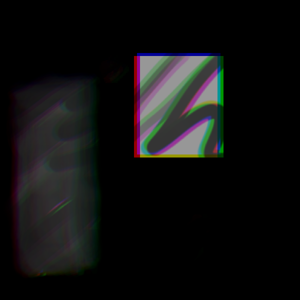
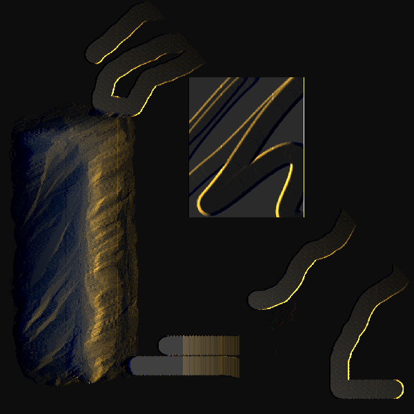
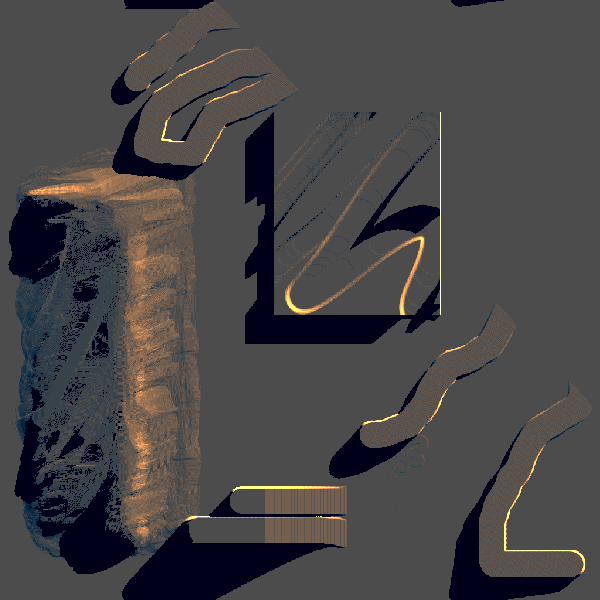

This is my first test applying GLSL shaders to a test texture.

The first shader somewhat resembling lighting

Here I've added shadows so the image. The method I've used is inefficient so this version of the program runs at a very low framerate.